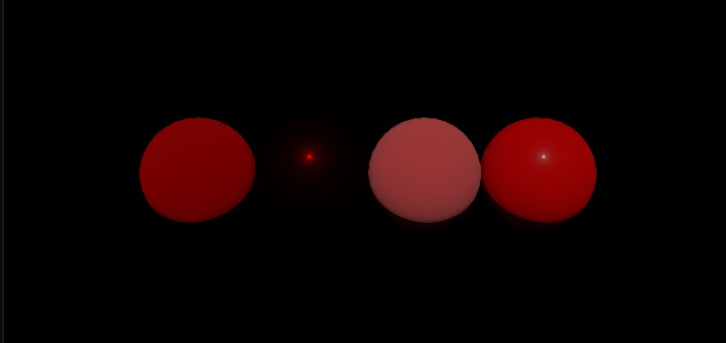
PBR material variations
Comparison of different metallic and roughness configurations using the same base geometry.
Real-Time Rendering · Vulkan · PBR · University Project
A real-time rendering project developed in Vulkan, progressively extending a deferred renderer with physically based materials, screen-space ambient occlusion, shadow mapping and ray-traced effects.
This project was developed through two consecutive assignments based on the same Vulkan rendering engine.
The initial deferred renderer was progressively extended with new rendering passes, physically based materials, ambient occlusion, real-time shadows and ray-traced effects.
The objective was to understand how modern real-time engines organize their rendering pipeline and how different effects interact through the G-Buffer, composition passes and post-processing stages.
The original Lambertian material model was extended with a physically based BRDF inspired by the metallic-roughness workflow used in commercial rendering engines.
The specular response was implemented using the Cook–Torrance microfacet model, with GGX normal distribution, geometric attenuation and Fresnel approximation.

Comparison of different metallic and roughness configurations using the same base geometry.
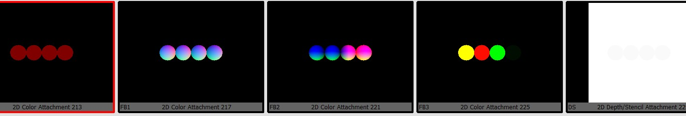
Material identifiers and surface properties are stored in separate G-Buffer attachments for the composition pass.
The engine uses a deferred rendering architecture. Geometry information is written to a G-Buffer before lighting is evaluated in a separate composition stage.
A depth pre-pass was added to populate the depth buffer before the main geometry pass, allowing hidden fragments to be rejected earlier.
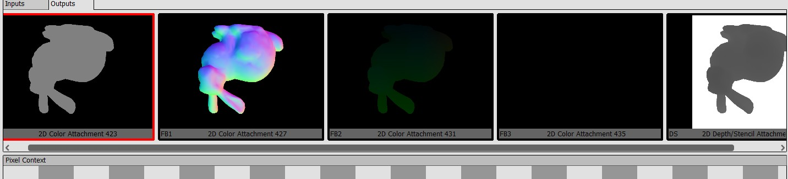
Visualization of the intermediate buffers used to reconstruct the final image during the lighting and composition stages.
Screen-Space Ambient Occlusion was implemented as a separate render pass using depth and normal information from the G-Buffer.
A hemisphere sampling kernel estimates local occlusion around each visible surface point. The raw result is then blurred before being applied to the final lighting composition.
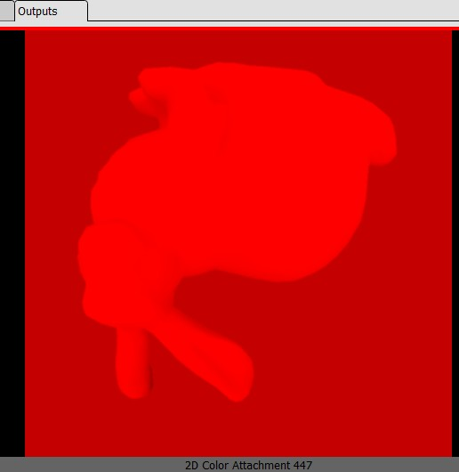
Initial ambient occlusion map generated from screen-space depth and normal information.
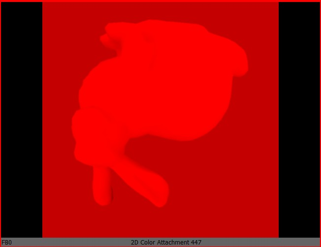
A blur pass reduces sampling noise and produces a smoother occlusion contribution.
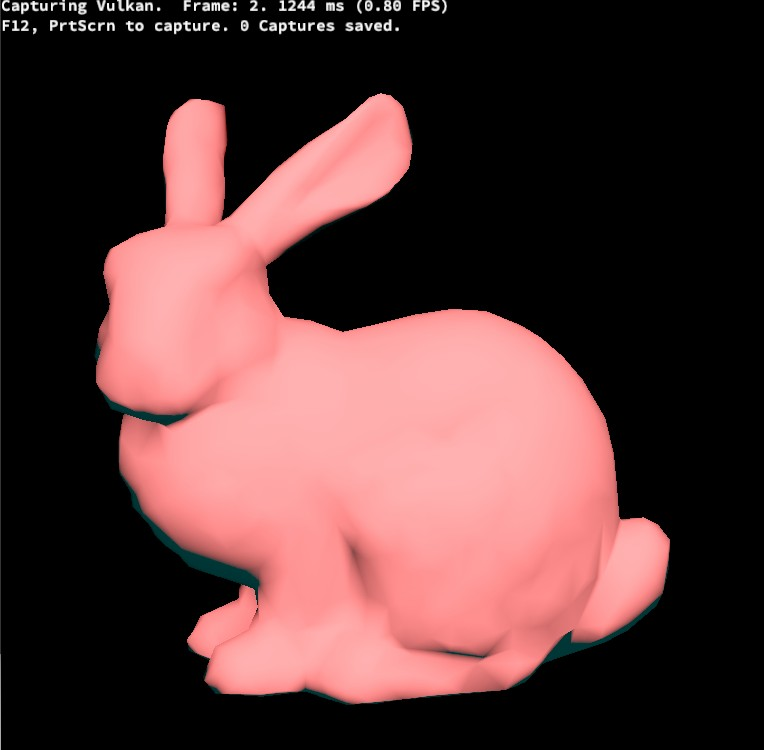
The filtered ambient occlusion map is combined with the lighting result during post-processing.
Real-time shadows were added through shadow mapping. The scene is rendered from the light source to generate a depth map that is later sampled during the lighting pass.
The implementation was tested with one and multiple lights, requiring separate shadow information for each light source.
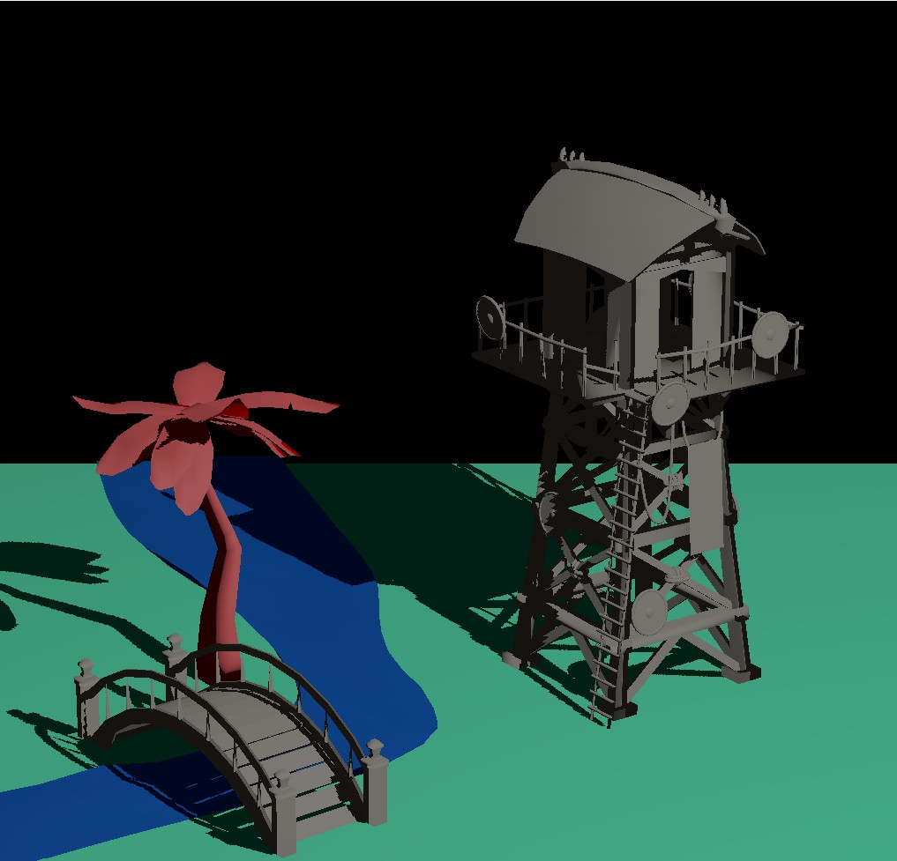
Depth-based visibility evaluation for a scene illuminated by one shadow-casting light.
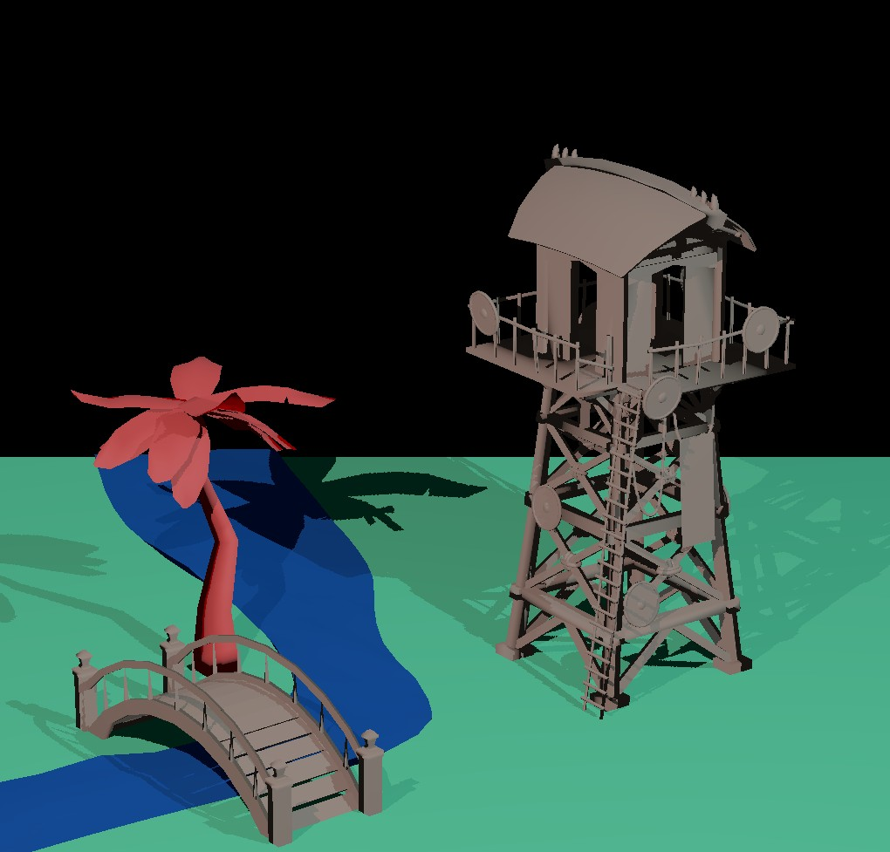
Independent shadow contributions generated from two different light sources.
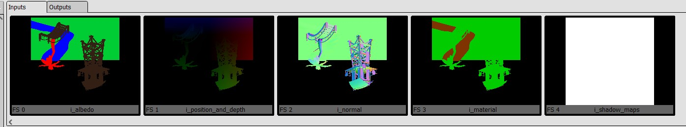
Integration of shadow information with the deferred lighting and composition pipeline.
The final extension introduced ray queries for visibility testing, allowing the renderer to generate softer and more accurate shadows.
Because ray-traced effects can contain temporal and spatial noise, a denoising stage was applied to stabilize the final result.
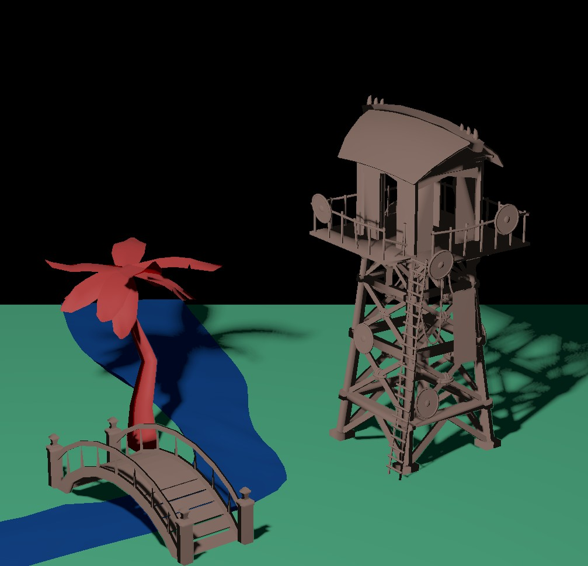
Raw ray-traced shadow result containing visible stochastic noise.
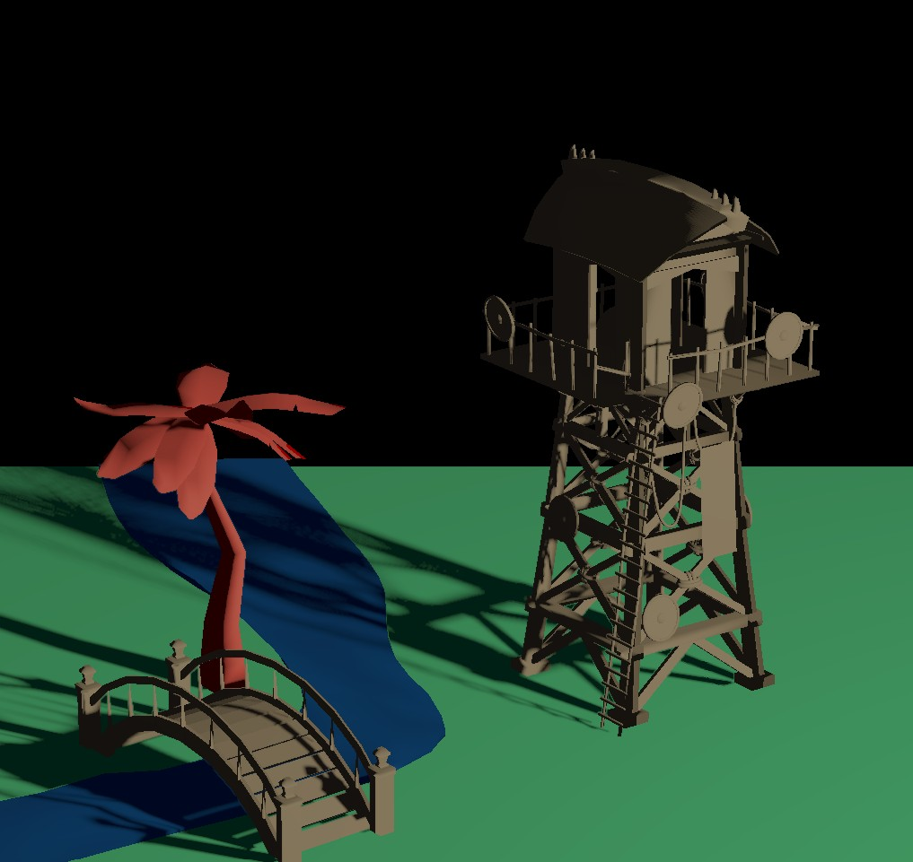
The denoising stage reduces variance while preserving the shape and softness of the shadows.
This project was developed by extending an educational Vulkan rendering framework. The complete source code is not publicly distributed because part of the base engine and assignment material was provided by the university. This page focuses on the techniques implemented, the rendering pipeline and the resulting visual comparisons.